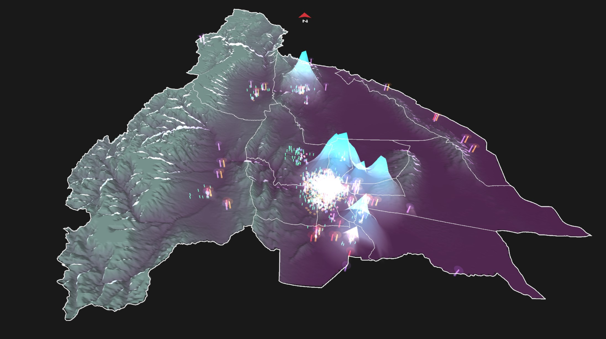
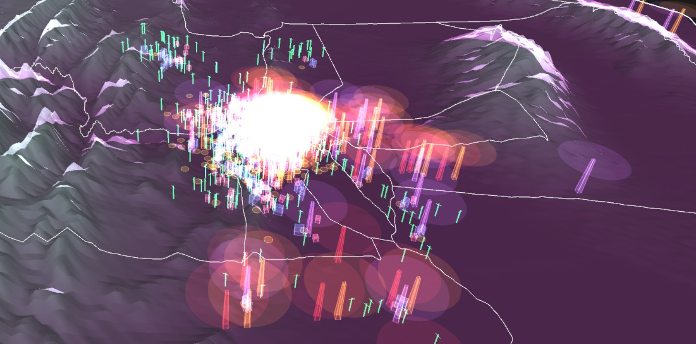
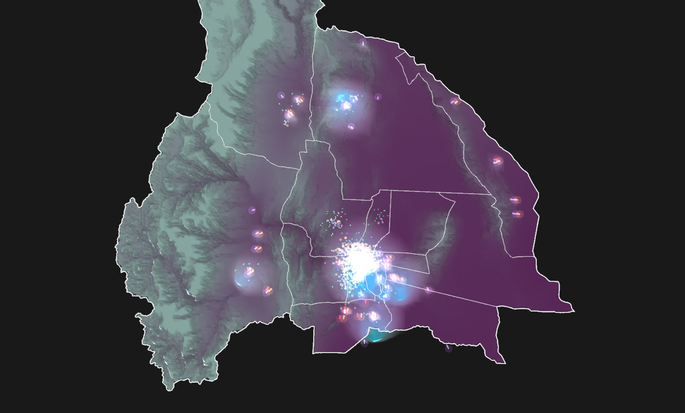
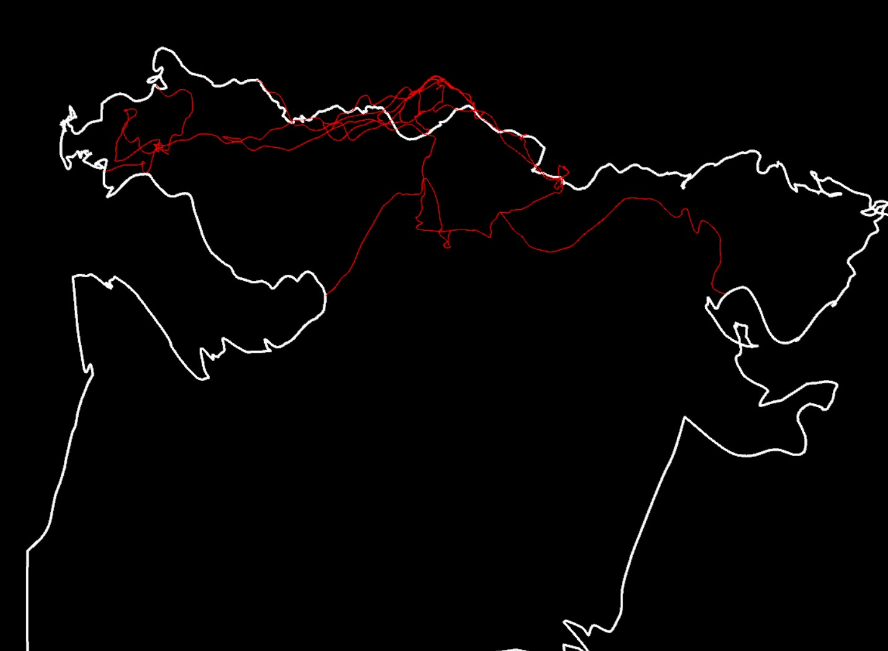
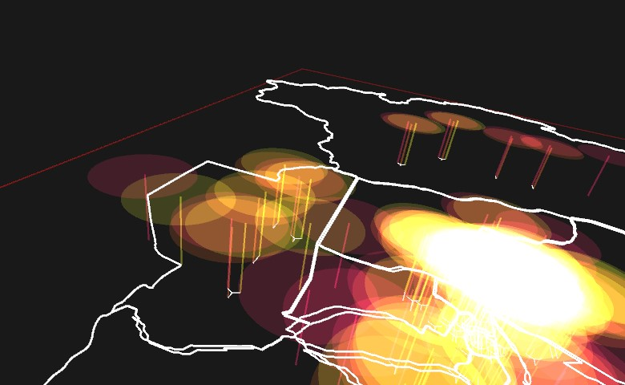

fundación telefónica - 2021
desarrollo de software para un proyecto de visualización de datos de biopus. encargado por fundación telefónica argentina.
el software procesa y visualiza una base de datos de infraestructura y tráfico de datos de la red de telefonía de la provincia de san juan, argentina.
software development for a data visualization project by biopus. comissioned by fundación telefónica argentina.
the software tool processes and visualizes a database of infrastructure and data traffic across the telephone network of san juan province, argentina.
   